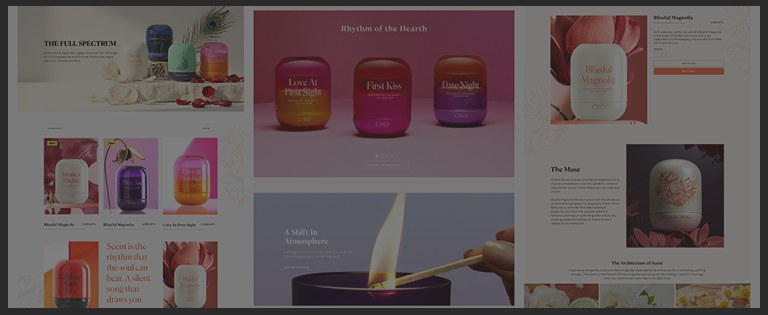
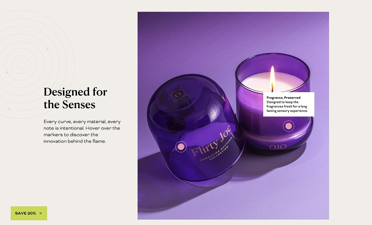
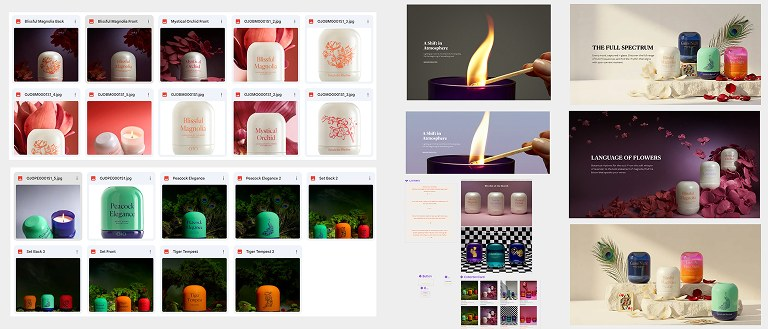
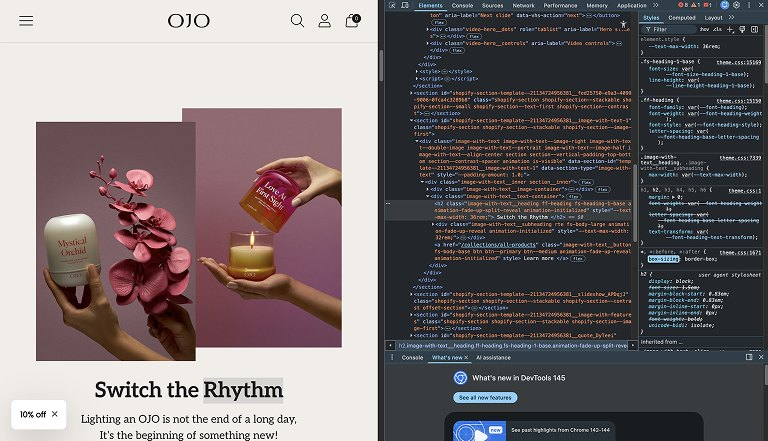

Scent, treated as a narrative.
Ojo doesn't sell objects, they architect atmospheres — but their site was a rushed MVP on a generic template. I rebuilt it around their philosophy, Switch the Rhythm, so the buying flow sells the ritual instead of the wax.
Role
Product Designer — Das Mione, my design studio
Timeline
Designed in 1 month · live 2 months after brief
Focus
Brand storytelling · Micro-interaction design · Art direction · D2C
Tools
Figma · Prototyping · Rive · Cross-functional QA

Collections as chapters, not a filtered grid
Ojo's core philosophy needed to be the foundation of the experience, not a tagline in the footer. I built a wireframe architecture that treated scent as a narrative.
Every collection became a distinct chapter — shifting the user from buying a candle to immersing themselves in a curated ritual.

Curating the visual assets
A luxury digital experience demands flawless visuals. I partnered with the marketing team to set a rigorous standard for all product photography and lifestyle imagery.
Aligning those assets to the UI's whitespace and typography is what held the editorial feel together across every touchpoint.

Purposeful motion, replacing off-the-shelf
The original site leaned on pre-packaged loading animations that cheapened the brand. I stripped them out and replaced them with motion that does a job.
High-fidelity prototypes with subtle parallax, elegant hover states and smooth page transitions — guiding the sensory journey without shouting over it.

Pixel-tight in the browser, not just in the file
A premium design is useless if it falls apart in the browser. I worked with the dev team through to launch and ran the testing myself — every breakpoint, the micro-animations, type scaling, high-res image loading — and then stayed with it once it was live, checking the real thing in real browsers rather than signing off on a staging link.
A storefront that finally sounds like the brand.
Live in two markets — ojocandles.com for Turkey and us.ojocandles.com for the US. Designed in a month, live a month after that, aimed at market perception and D2C conversion at the same time, which is normally a trade-off.
Here the constraint was taste rather than complexity, and most of the job was talking the client out of their first instinct.